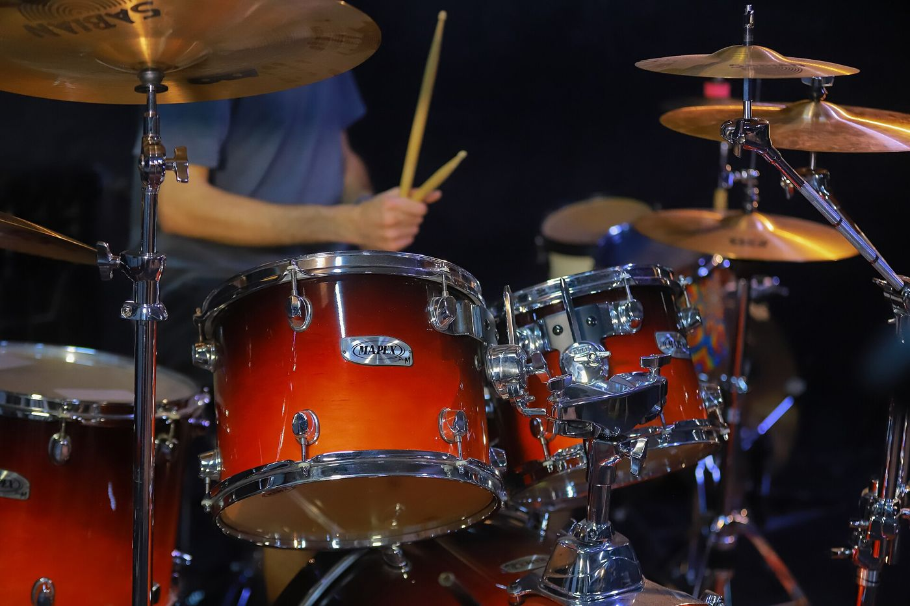
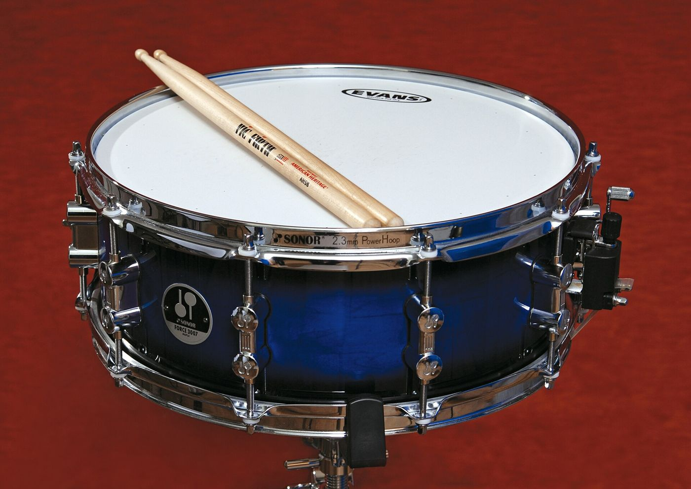
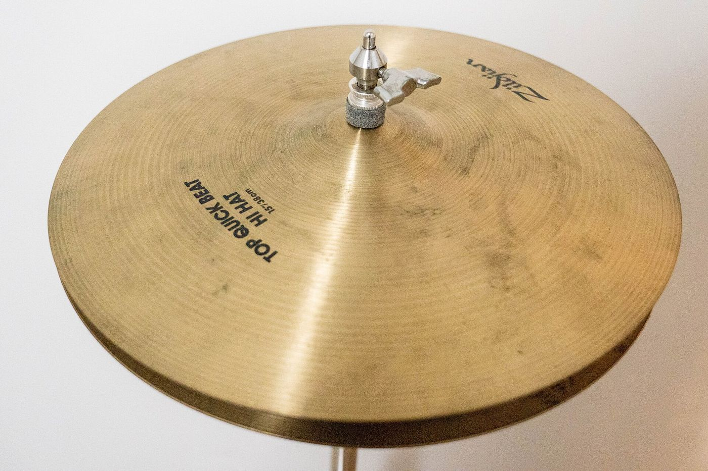
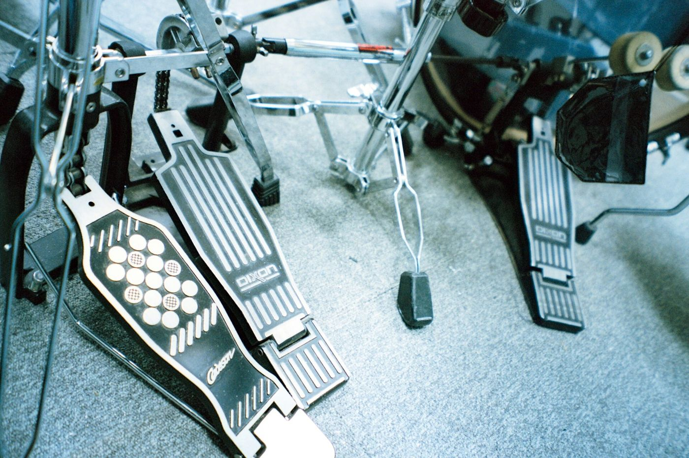

Sticks
Usually hickory, about 16 inches long. The thick end (the butt) hits harder, the tip makes a clear ping on cymbals.
Drum Lab Grades 5–12 · 60–90 min
Learn the kit, follow drum notation, and hear how a beat is built one strike at a time.
Use a practice pad, a tabletop, or the on-screen kit. Wear earplugs on a real kit.
Advance rule: three clean repetitions, then add 5 BPM. If the beat wobbles twice, take 5 BPM off. Never trade steady time for speed.
Parts
Meet the kit
A standard rock kit has five drums and three cymbals. Drums make a sound when a stretched head vibrates, and cymbals ring because a thin metal plate shimmers. Click any part to hear it and learn what it does.
3D preview needs WebGL, which is not available here. Use the buttons below to hear and learn each part.
Drag to orbit · pick a part below




Every drum, from the smallest tom to the biggest bass drum, is built from the same few parts. Click the numbers on the cutaway of a snare drum (or the buttons) to learn what each part does.
Tightening the tension rods stretches the head, which makes it vibrate faster, and faster vibration means a higher pitch. Drag the slider to change the head tension of this tom, then hit it. (The same physics is explored in Physics of Music.)
Usually hickory, about 16 inches long. The thick end (the butt) hits harder, the tip makes a clear ping on cymbals.
Your foot pulls a felt beater into the drum head. Heel-up or heel-down, both work.
The throne is the adjustable stool. The drum key turns tension rods to tune the drums.
Set up
Get ready to play
Good drumming starts before the first hit. A comfortable setup lets your arms and feet move freely, and a loose grip lets the stick do half the work.
Adjust the throne so your thighs are level or slope slightly down toward your knees. Sit near the front edge, centered on the snare, with a tall back and loose shoulders.
Right foot on the bass drum pedal, left foot on the hi-hat pedal. Both should reach without stretching. Left-handed drummers often set the whole kit up mirrored.
Both hands hold the sticks the same way. Pinch each stick between the thumb and the first joint of the index finger, about a third of the way up from the butt end. That pinch is the fulcrum. The other fingers wrap loosely and the palms face down.
Lift the stick, let it fall, and let it bounce back to where it started. Squeezing kills the bounce and tires your hand. Hit the centre of the snare head for a full, round sound.
Protect your ears: an acoustic kit is often louder than 100 decibels at the throne, and hearing damage is permanent. Wear earplugs made for musicians whenever you play a real kit.
Ready to continue? On a pad, a tabletop or the snare, play R L R L as four even strokes at a slow count. Every stroke should bounce back to the same height and sound the same.
Notation
Read the page
Drum music uses a five-line staff, but there are no pitches. Instead, each line or space is a different drum. Round note heads are drums, X heads are cymbals. Higher on the staff usually means higher on the kit. Click each note to hear its drum.
Feet are written with stems pointing down, hands with stems pointing up, so you can read both at once.
The two numbers at the start (like 4/4) say how many beats are in each bar. The repeat sign at the end says: play the bar again.
Time moves left to right. Notes stacked above each other are played at the same time.
Which drum is written here?
The shape of a note tells you its length. Beams join notes that share a beat. Under every note we print the count: say it out loud while you play. Press play, and the moving bar shows which count is sounding.
The two numbers at the start of a piece are the time signature. The top number says how many beats are in a bar; the bottom number says what kind of note gets one beat. Pick a meter below, press play, and count out loud with the light.
Not a time signature: a half-time feel makes a groove feel twice as slow without changing the tempo number, usually by moving the snare backbeat to beat 3 only. A double-time feel does the opposite: the same tempo suddenly feels twice as fast. Compare “Basic rock beat” and “Half-time feel” in the Beats section below to hear it.
Play this note louder than the ones around it.
Play it so quietly it is felt more than heard.
Open hi-hat: let the cymbals ring instead of closing them.
A grace note (flam or drag), played just before the main note.
Sticking: which hand plays each note. Orange = right, blue = left.
Two dots and a thick bar at the end: go around again.
Beats
Play along
Most beats share the same recipe: cymbal for the steady pulse, snare for the backbeat, and kick for the bottom. Pick a beat, press Play, and follow the moving bar while listening for how the three parts lock together. Slow the tempo down to practice, and turn on the click track to keep your own time.
Try this: tap the snare part on your desk while the basic rock beat plays. It should land on “2” and “4”, right where you would clap.
Backbeat
Move from listening to playing
Use the pads or the keyboard to play a small kit. First explore freely. Then start the challenge: the guide plays hi-hat on every beat and kick on beats 1 and 3. Your job is to land the snare on beats 2 and 4 for two bars.
Performance bench
Free play — make a groove with A, S, K and L.
You will hear a four-count before the groove starts.
Technique: keep tapping the hi-hat with K while the challenge runs if you want the harder version. The score only measures your snare timing.
Rudiments
Stick control
A rudiment is a short sticking pattern. Drummers practice them on a snare or a practice pad to build speed, control and even sound. The letters under the staff tell you which hand plays: R = right, L = left. Play slowly first, keep every note the same volume, and only speed up when it feels easy.
Read this like a page from a funk primer. Your hands keep one pattern, and each rung of the ladder changes exactly one thing: first the bass drum, then ghost notes, then the open hi-hat. The exercises are numbered straight through, from 1 to 68, and get a little harder each line. Play one exercise four times in a row while counting out loud, then move down. The last rung puts together only parts you have already played.
Start with exercise 1.
Feel: the page is written straight, like the method books. Swung sixteenths plays every “e” and “a” a little late (long–short), while the “&” stays on time: the lilt in a lot of New Orleans funk and hip-hop. It changes nothing on rungs 1 and 4, which have no sixteenth notes.
Hold the stick about a third of the way up from the butt, with a relaxed grip. It should be able to bounce.
Quiet notes stay low, loud notes start high. The stick always comes back to where it started.
Play at 50 BPM until it is perfect, then add 5 BPM at a time. Speed comes from control.
Fills
Change it up
After playing the same groove for a few bars, drummers play a fill at the end of a phrase, usually on the last beat or two of the bar, to signal that something new is coming. Each example below is two bars: a groove, then a groove that ends in a fill. The fill resolves with a crash cymbal on beat 1 of the loop.
Listen for: the fill always starts on a number you can count (usually beat 3 or 4), and ends exactly on the next “1” with the crash and kick together.
Build
Compose a groove
The grid below has 16 steps, one bar in sixteenth notes. Fill in hi-hat, snare and kick to make a groove, or load a starter and change it. The notation above the grid updates every time you click. When you like a groove, press Add to homework sheet: it joins a printable handout with the count line, a tempo ladder and a practice log. Try moving one kick note and hear how the feel changes.
Every groove you add lands here, one sheet per student. Edit the title and note, pick how it is counted, then print a handout with notation, a count line, a tempo ladder, a practice log and a QR code that opens the groove on a phone.
Check
Show what you know
Standard five-drum, three-cymbal rock kit, notated in the common drum-staff convention (not a single official standard — some publishers vary drum placement slightly). Audio is synthesized, not sampled from a real kit. Rudiment names and stickings follow the widely used 40-rudiment list; this lesson covers a practical starting subset, not all 40.
Keep going
Take your groove into Music Lab, where you can layer it with synth sounds on a step sequencer, or trace the same drum patterns onto chords and melody in the piano and guitar lessons.